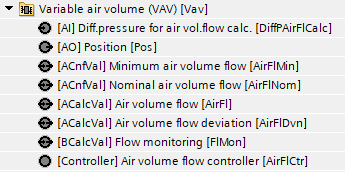
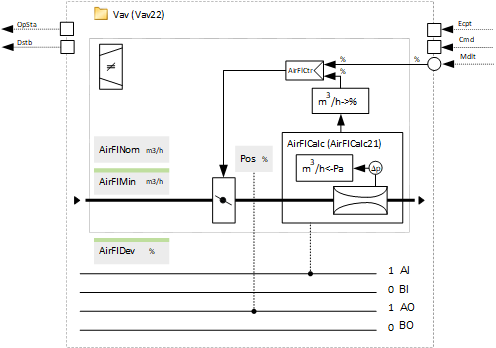
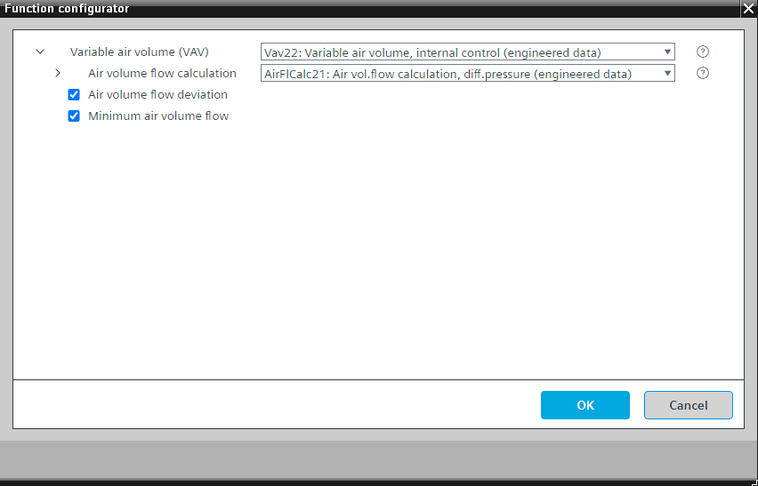

[Vav22] 可变风量，内部控制
Program block, name / node subtype: [Vav22] Variable air volume, internal control
Library hierarchy: Ventilation and air conditioning equipment
Family: Vav
项目树 | 图表 |
|---|---|
|
 |  |
Configurator


程序块存储在没有 I/Os. 的库中 使用auto-create and auto-connect函数创建 I/Os 和 /or 将它们连接到接口块，例如 R_A、CMD_B。或者，从包含库中预定义 I/Os 的文件夹中取出 I/Os，并从工厂中取出 /or，并将它们连接到接口块。
Performs internal control for a VAV.
内部控制（从 PXC4/5/7 的角度来看）： VAV 控制在 PXC4/5/7. 中执行，它测量体积流量并调节风门位置以控制空气体积流量。
这种类型的控制通常适用于较大的管道尺寸（此尺寸没有 VAV 盒子），没有 VAV 盒子可用，并且测量空气体积流量（使用 AirFlCalc21 或 AirFlCalc22）并调节普通风门。
必须设置标称空气体积流量（通过模拟配置值）。
该程序块具有以下可选功能：
Option: Air volume flow deviation
模拟计算值显示供气不足的百分比（即使风门完全打开，风量流量也无法达到设定值）。
风量流量偏差可用于风扇速度优化。
Option: Minimum air volume flow
维持最小空气体积流量（以 m3/h 为单位）的配置。
姓名 | 描述 | 类型 | 报警/通知类 | 趋势/类型 | |
|---|---|---|---|---|---|
AirFlCalc | Air volume flow calculation | [AirFlCalc21] Air volume flow calculation, as a function of differential pressure | N/A | N/A | |
Pos | Position | AO：模拟输出 | No | 是的，2 | |
AirFlCtr | Air volume flow controller | Ctr: Controller | N/A | N/A | |
AirFlNom | Nominal air volume flow | ACnfVal: Analog configuration value | No | No | |
姓名 | 描述 | 类型 | 报警/通知类 | 趋势/类型 | |
|---|---|---|---|---|---|
AirFlMin | Minimum air volume flow | ACnfVal: Analog configuration value | No | 是的，4 | |
AirFlDvn | Air volume flow deviation | ACalcVal: Analog calculated value | No | No | |